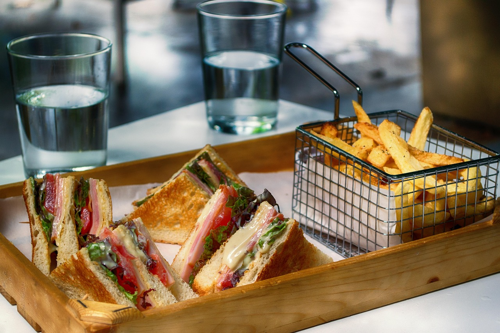
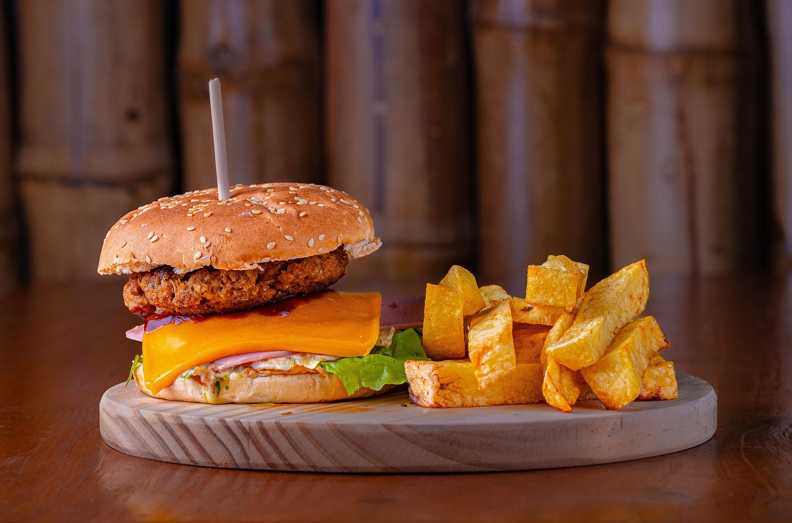

>



Veg Club Grill :-
The club sandwich likely originated in the late 1800s in New York City at a private men's club, such as the Union Club, which is why it's called a "club" sandwich. It was also potentially created at the Saratoga Club in Saratoga Springs, New York, around the same time. The sandwich is often incorrectly thought to stand for "chicken and lettuce under bacon," but its name comes from these exclusive clubs, not an acronym.mirch-masala :-
The term "Mirch Masala Pizza" refers to a pizza with Indian spices, not the restaurant chain of the same name. Mirch Masala is a restaurant chain that started in 1992 in Ahmedabad, India, and is known for its North Indian food and rustic, dhaba-style ambiance. The name "Mirch Masala" itself means "chili and spices," reflecting the Indian-inspired cuisine the restaurant serves.Burger :-
The modern burger evolved from "Hamburg steak," a dish brought to America by German immigrants, with different individuals and locations claiming to have created the first hamburger sandwich around the late 19th century. Some popular claims include Charles Nagreen in Wisconsin in 1885, who flattened meatballs and put them between bread, and the Menches brothers in New York in the same year, who substituted ground beef for sausage at a fair when they ran out of pork. The hamburger gained widespread popularity with the rise of fast-food chains and became a global food staple, evolving into countless variations.©2025 cafe sizzler |All right reserved